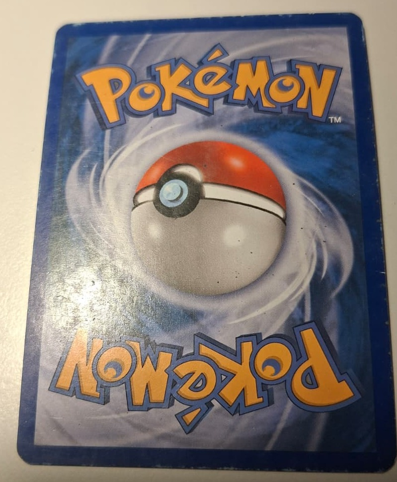
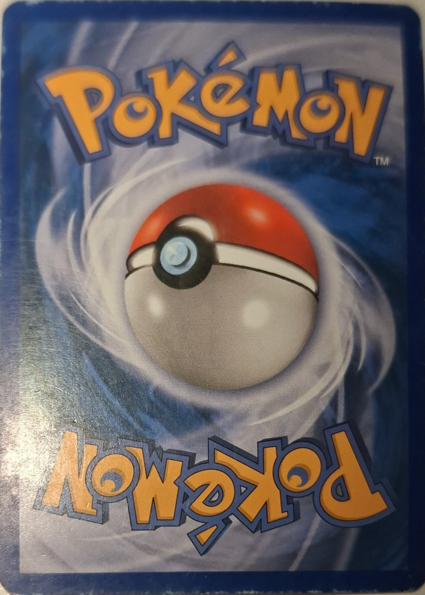
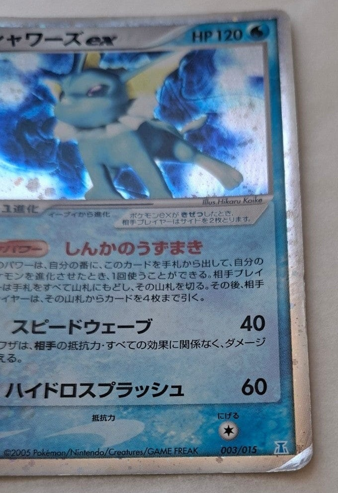
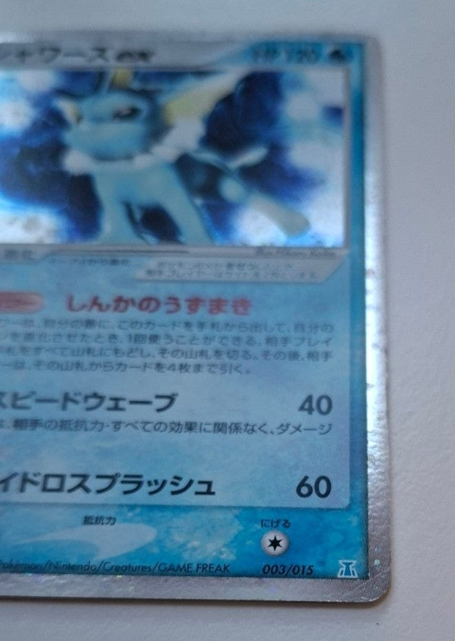
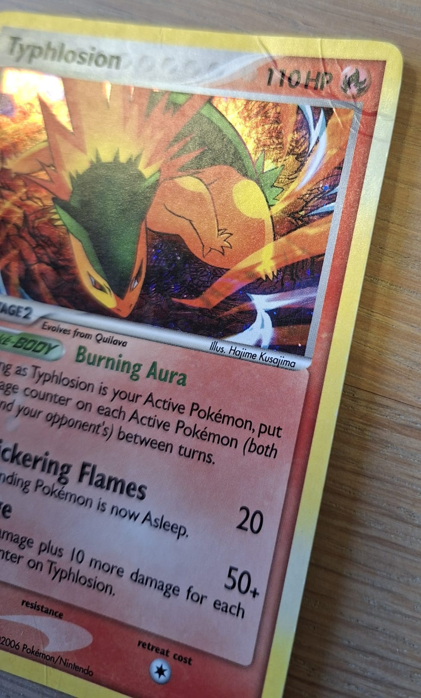
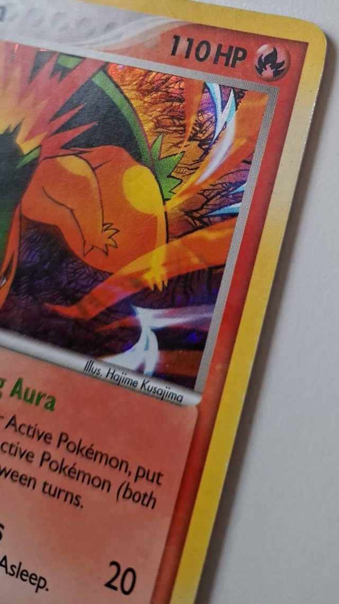
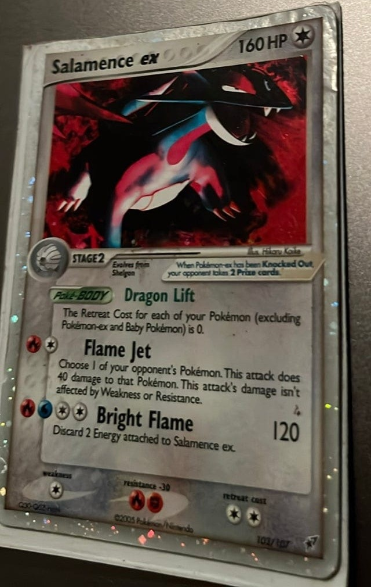
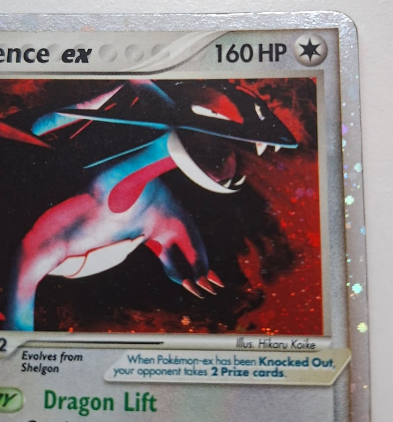

CARD RESTORATION
Card Repairs
Professional care for your Pokémon cards.
GIVE YOUR CARDS A SECOND LIFE
Why restore your cards?
Some of our cards have not been treated too kindly in the past. Whether you're looking to bring a childhood favourite back to life or improve a card's condition before selling, we're here to help.
If you have questions about a specific type of damage, want to discuss repair options, or would like to send cards in for repair, feel free to get in touch!
Our repair services are available at the listed prices for cards valued under €150. For cards valued above €150, we'll discuss the repair options and pricing individually.
Restoration can improve a card's condition and presentation, but does not guarantee an increase in market value.
Cleaning

Before
AfterMany cards have accumulated dirt over the years. Good news, most of this we can remove quite easily. Especially the black spots (known as Poke-mold) you see in the picture can be removed in most cases.
Edge Peel

Before
AfterSome cards have their corners or edges peeling away. If it is folded, but not torn, we can often restore it to its original state.
Cleaning included
Creases

Before
AfterCreases in cards can be greatly reduced or even totally removed. For larger creases, the repair options and pricing will be discussed individually.
Cleaning included
Other Damage

Before
AfterCards can also have other kinds of damage, which do not really fall into the above categories. Repair options and pricing will be discussed individually.
Cleaning included
LET'S TALK
Interested in a Repair?
Have a card you'd like to restore, or want to know more about our services? Feel free to contact us. We'd be happy to discuss the possibilities and help you get started.